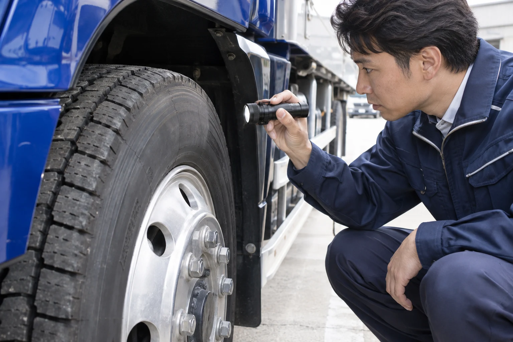

荷物を知る
大きさ、重さ、扱い方。運ぶ前に、荷物のことを確かめる。
物流の仕事は、荷物を動かすだけでは終わらない。
託す人、待つ人、運ぶ人をつなぐ仕事です。
工場からお店へ。倉庫から、次の現場へ。荷物の数だけ、届けたい理由があります。
運ぶものを知り、受け取る人を考える。その仕事を担う人の毎日も大切にする。青葉運輸という見本の会社は、その考え方から生まれました。
大きさ、重さ、扱い方。運ぶ前に、荷物のことを確かめる。
日時だけでなく、受け渡しの条件まで。納品先での仕事にも目を向ける。
無理のない段取りと、相談できる関係。働く人の毎日から物流を考える。

荷物だけでなく、運ぶ人の毎日も守る。
毎日の判断から、安全を考えます。
タイヤ・灯火類・その日の体調。走り出す前に、一つずつ確かめる。
休憩時間も、道路状況も。時間と心に余裕のある運行へ。
運転技術と、現場での気づき。学んだことを、次の一便へ。
安全への取り組みを紹介する掲載例です。実在企業の実施状況や認証を示すものではありません。
青葉運輸は、このサイトのために設定した架空の会社です。所在地・代表者・設立年・許認可は設定していません。